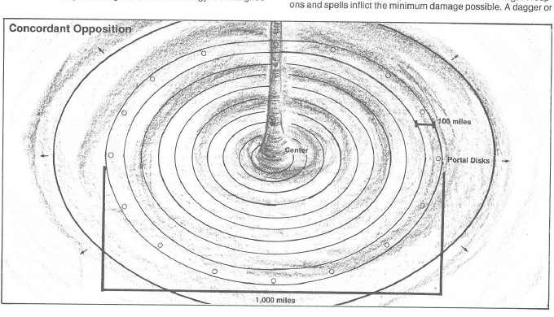

协调对立 · Concordant Opposition
协调对立是一个真正中立的位面，位于外层位面车轮的中心。它不像其他位面那样拥有固定阵营或明确形状；地形从中心向外展开成环，门户和白色圆盘散布在不同距离处。越靠近中心，伟大力量和强力法术越受限制。

中心区域由秩序与混沌、善良与邪恶同时存在的力量维持。旅行者可能进入与自己家乡相似的地区，也可能突然发现农田、森林、城市和海岸在同一片土地上重叠。协调对立对武器和法术造成的伤害通常会降低，旅行者的外在阵营也可能被当地环境反映出来。
协调对立中的门户由白盘组成，可以通往六百英里范围内的其他位面；更远的门户需要集中、正确的目的地或地下城主裁定。真正中立的旅行者通常比较容易获得安全通行，过于偏向某一阵营的人则可能被送往错误位面或遭遇相反力量。